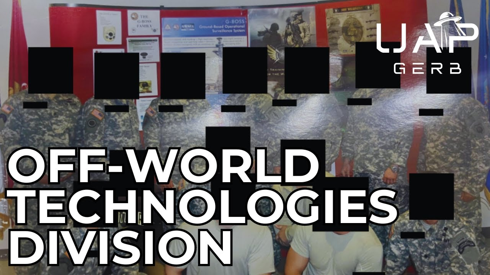

Off-World Technologies Division – UAP Technology Reverse Engineering

Published: 2024-07-18 · Duration: 54:16 · Channel: UAP Gerb
Description
A dive into the "Off-World Technologies Division" - a program named by 1st hand witness and US Army Green Beret as conducting UFO technology reverse engineering.
Between 2013-2015 RA was sent to a special weapons center located near Crane, Indiana to test foreign and domestic weaponry. Due to his TS/SCI clearance, the weapons instructor, a private contractor employee, took RA and another soldier deep underground to this anomalous division.
The division housed two pieces of technology not made by human hand - a sphere, roughly the size of a basketball, with an indentation on top, as well as a clear tablet-looking device apparently projecting some sort of symbology. RA was told these devices were considered weapons due to energetic output when recovered from a craft. Both technologies were said to interact with human consciousness.
Join this first-hand investigation to discover the secrets of the Off-World Technologies Division, the connections to SAIC and Sandia Labs, and more!
PLEASE NOTE: ALL RESEARCH LINKS ARE ATTACHED IN GOOGLE DOC BELOW. FAR TOO MANY LINKS FOR YT VIDEO BIO
0:00 Intro 1:47 Witness RA 3:17 Location 11:37 Off-World Technologies Division 21:44 Sheehan Symbology 24:29 Aftermath of Events 29:49 Science Applications International Corporation 40:34 MJ-12 Connection 43:18 Sandia National Labs 44:58 Bob Oeschler 47:15 Salvatore Pais 49:05 Conclusion
Follow Kermit on Reddit: https://www.reddit.com/user/frognbadger/
Full List of Research Links Here: https://docs.google.com/document/d/e/2PACX-1vQJyCnY6EGGbst6xtlGHQ71bUrU6oq_lUuCLfGBeepVKrGRMVgTojqdJW4q8diKHNekelLSqGK_huRg/pub
Music By: / @jaxius
Jaxius Music:
/ basic indigo - topic
/ @hurricanebeatz-ysm
THIS VIDEO IS FOR EDUCATIONAL PURPOSE ONLY! FAIR USE PRINCIPLES UNDER SECTION 107 OF THE COPYRIGHT ACT.
ufo #uap #uapnukes #uapdisclosure #ufology #ufonews #ufosightings #uapsightings #ufofootage #uapfootage #hynek #condoncomittee #Jallenhynek #projectsign #projectgrudge #projectbluebook #bluebook #ufocongress #SOL #solfoundation #karlnell #Battelle #UFOreverseengineering #lockheed #skunkworks #lockheedmartin #rosscoulthart #fastwalker #blackvault #slowwalker #kingman #ufocrash #nickredfern #Grusch #Magenta #michaelherrera #USO #TimothyGallaudet #mystery #mysteries #unexplained #extraterrestrial #space #technology #greer
Transcript
Show transcript
When you hear of a program called the Off-World Technologies Division, you might think of the U.S. Army's brief in-house group known as the Interplanetary Phenomenon Unit that analyzed UFOs in the 1950s. Or maybe you think of the U.S. Air Force's foreign technology division initially achieved by Colonel Philip J. Corso, who stated technology such as night vision and fiber optics were reverse engineered for the 1947 Roswell, New Mexico crash. Whatever you think of when you hear of the Off-World Technologies Division, there is a first-hand witness who can shed light on this never-before-heard-of, non-human-intelligence technology exploitation program. A witness whose claims can be backed by his U.S. Army Green Beret and Special Forces credentials and verified placement where he claims this anomalous division is stored. It was within this division stored at the Naval Surface Weapon Center in Crane, Indiana. Green Beret witness R.A. observed recovered technology not made by human hands. Technology so profound, strange, and advanced, it seemed the Navy and a certain private company's best and brightest could not begin to comprehend this tech. What's going on guys, it's UAP Gerb, and thank you so much for joining me today as we hear from for the first time ever, the first-hand witness testimony of Special Forces member R.A. in his claims of an Off-World Technologies Division at the NSWC Crane. R.A.'s testimony may reveal a disturbing and monumental UFO reverse engineering program nestled within the Navy's premier special weaponry installation. Join me as we conduct an astounding primary investigation into R.A. his claims and a private defense contractor likely involved with UFO technology reverse engineering programs. To start, who exactly is R.A. and why should his testimony be heard? R.A. is easily the most accomplished and credentialed U.S. soldier I have ever had the pleasure of speaking to. R.A. is a U.S. Army Special Forces operator, aka a Green Beret, who served within the first Special Forces Airborne Command. He served as an 18 Bravo weapon sergeant, a key element to any Special Forces division described by the U.S. Army as one of the most highly skilled soldiers in the world. 18 Bravos are tasked with operating and maintaining an array of weaponry, including small arms, heavy weapons, bombs, and mines, communications equipment, and must be able to employ conventional and unconventional warfare tactics, and guys this is key. Operate and maintain both allied and foreign weaponry. His Special Forces accolades have been thoroughly vetted, with R.A. providing a full list of his certifications as well as his DD 214. He also completed SEAR, Survival Evasion Resistance and Escape High-Risk Training at Level C, which is the hardest and most challenging SEAR course. The witness even completed the U.S. Army's ALC, or Advanced Learning Course, and earned a T.S.S.C.I. Top Secret Sensitive Compartmented Information Security Clearance. I was connected to R.A. through mutual contacts, who told me that this R.A. wanted to help disclosure, wanted to tell about his experience, but wanted to remain anonymous. Between 2013 and 2015, R.A. was sent to the Naval Surface Warfare Center, located in Crane, Indiana, to train with advanced foreign and domestic weapon technologies, and their implementation into the armed forces. The Naval Surface Warfare Center, NSWC, as I'll be referring it to for the rest of this video, is part of the Naval Support Activity Crane, alongside the U.S. Army Ammunition Activity, which stockpiles much of the U.S. mainland's munitions. Crane, Indiana was chosen for these stockpile duties during World War II, as such a landlocked state location would be difficult to be targeted by enemy forces. Quote, NSA Crane, home to one of the nation's most important military laboratories, is sometimes referred to as the Pentagon's best-kept secret, end quote, Senator Joe Donnelly, Indiana. NSWC is an enormous facility, with several underground layers highlighted as the premier Navy lab, whose mission is to, quote, provide acquisition and in-service engineering and technical support for sensors, electronics, electronic warfare, and special warfare weapons, end quote. Operations at Crane are divided into three distinct focus areas, strategic missions, electronic warfare, and expeditionary warfare. But this location doesn't focus just on conventional missions, such as we see in this recent Duke University research funding announcement titled Long Range Broad Agency announcement for NSWC Crane. A key focus of Crane programs are advanced concepts and technologies. NSWC Crane is best described as a Navy federal laboratory with a reputation for national technical leadership, and a Navy lab that works directly with warfighters to create comprehensive, innovative solutions at the speed of relevance. The underground presence of this base is also key to mention here moving forward. Not only are there numerous underground bunkers for munitions storage hidden below the ground, but also small arms testing resources such as an underground 100-meter firing range. The naval support activity location holds over 3,000 buildings spanning 64,000 acres above ground. NSWC Crane is deeply tied to private defense contractors, employing over 2,489 private contract workers, including one in specific, we will mention in a little bit. As mentioned before, RA was at Crane to test advanced foreign and domestic weaponry. The Crane facility has historically worked closely with the U.S. Army for weapons testing, training, and defensive capabilities, such as countering improvised explosive devices in Iraq. And the NSWC is no stranger to reverse engineering, quote, critical technology to maintain fleet readiness, end quote, such as this black box that was, quote, unknown how it was constructed, functioned, or how to repair it, end quote. This device was successfully reverse engineered by electromagnetic warfare experts and designated as critical technology in an AN-SLQ-32 or SLIC-32 component, a ship-board electronic warfare suite. Also interesting and worthy of note, NSWC has to adhere to DOD guidebooks for, quote, situations such as this, end quote. So let's hear from RA for the first time. In his words, why was he at Crane? It was for a weapons course. So we were, we were specifically going there to train up on the new Maygun setup and a couple other, like, SOCOM weapons that were coming in, coming online, like iterations to the SCAR, so some cases that were coming in, and then also to get educated on some of the enemy technology. So whenever we'd be training like that, that's like TSSCI level stuff. They'll have stuff that's, for example, they'll have a description of the course and what you're going to do, and then all the stuff that's going to, that you're going to get taught that's not able to be written down or, you know, exposed. It'll be, they'll explain that in a different way. So I would say that. It's like, we knew we were going to get exposed to some other foreign weapons that they had, they had recently recovered, and we were supposed to kind of just help provide an input on what we thought about those systems. And they did have them there. They had some Russian weapons that had bullets that they were, they think they could, Russian force firing with biologics and bullets. And so we had, we were doing some stuff with that. And so it was, it was looking at other foreign weapon systems that they were, they were spinning around with, and the CIA operatives had captured and that they go back to Crain. So if you think about it, like whatever mechanism they have, logistically, to get that shit from wherever they found it to Crain, why would they not use that same apparatus to get whatever else they find? RA was told that out of his class of about 10, him and only one other soldier with TSSCI clearance would be taken to see the interesting stuff, the quote, foreign adversarial tech. Yes. So the way that it was kind of weird how that happened, there was only, so there was a bunch of us in the class, I forget, I mean, you saw a picture, there was only two of us in that group that had a TSSCI level clearance at the time. And those were the two, we were the two that got taken to see the other stuff. So they were, the rest of the class didn't see the foreign weapons they were back in engineering or the awful technology that they had exposed us to. So nobody else saw that. And then we were also told not to mention next to the rest of the class that we were the ones getting exposed to that technology. So after observing tech considered disruptive, such as the experimental Russian bullets RA spoke of, him and his fellow soldier were taken deep underground to a location that stood out from the rest of Crain, appearing pristine and quite advanced. We went down into like an R&D area, that's where it had on-vrooms. So the on-vroom is going to be like an extra layer of security, right? And then, so it's kind of what it was, we went through a couple checkpoints. I mean, I remember going through like a door to get to a door to get to that, like that kind of like compartmentalized, like whether who knows what they were scanning, I don't know, they're probably checking us for whatever. Obviously, it was like considered like a scare. So we give up all electronics and everything before we even went down there. So I mean, you're scrubbed, you know, everything possibly, you don't have anything that could take a note with or something, you know, you're scrubbed with everything. So then you go through, we went down the elevator, and like I said, it was, I could tell you're a lower pretty low, because I remember it being like one outside and then down there it was really cold, just because of the depths. So we had to be some significant amount below the surface, I don't know how far at all, but um, and then I went through the checkpoints and then into an arms room area, which is what we're shocking about again, is that all of crane was old and dilapidated and beat up. I mean, it looks like in 1970s facility, and you go underground in this area, and it was like a spaceship, you know, not literally, but I mean, it was so much more advanced than the stuff up top. Like you can tell this is where the, the shit happened. You know, this is where they maintained and upgraded and continued to work and all the other stuff that just kind of like let look like shit on purpose problem. Nothing in crane was labeled. All the buildings were, I mean, like really basic looking. When we were under, in that particular area, there was, there was labeling on like different areas. So there was like, I remember seeing a couple signs, I don't know what they said, I mean, so long ago now, but um, yeah, there was like signage like saying what part you were in. And what struck me is why I remember that, I think, is because like, I was thinking how big is this underground area that they have to label where you're at, you know, because if you think about it, I mean, if we just took an elevator down to the area that was small, then why would you label it? Oh, this is where you are here. And it felt like it was falling, not like it was this one little area, you know, it was under the NSWC crane, RA would arrive to observe the off world technologies division. RA was told by his guide, a private contractor, former military and the same individual leading the weapons training, quite nonchalantly that they were entering the quote, off world technologies division end quote. And before he expands on an I asked RA his initial reaction when he was told quite casually about the division's name. Well, I mean, I was a trained green beret, so my reaction was stoic, but when I got back to the hotel, I was freaking out. I mean, because up to that point, I had, I had believed in like, obviously that there were, you know, probably aliens out there, probably life out there in the universe, of course, just statistically speaking, but I never thought that I wouldn't have gone as far as if they'd been here or any of that. But to then to see that these guys were talking about like, was like, over a coffee break. I was really surprised by that. And me and the other guy had a great conversation about it when we got back. And it was kind of just like, now what? Because like the whole world is different to me. And it took me a lot of years. I thought about that for a lot of years, just was this mean for me, you know? Yeah, I mean, there's a part of me that was grateful that I got that I know, but that I know I can at least within myself, I can say, I know that there's another life out there, you know, and I know it because I was exposed to it in this way. However, that happened. Now I know, you know, and that's, I'm grateful for that. But at the same time, I don't know what the cost of that's going to end up being, you know, upon entering this unlabeled division, RA did not enter a normal firing range or laboratory. He and the other men were greeted to what seemed like a scientific observation room overseeing a laboratory housing two pieces of technology. So it was, it was basically the way I would describe it is like a viewing room. And I think it was, you can imagine, like they're probably we're going to do different types of experiments on these objects and, and the area that they kept it in or stored it in, you know, or maybe they will just have this setup to be a piece to come through and look at it, people that weren't there, we're going to the people that know about this technology. I don't know. But it's clearly set up in a way that you could see the room that it was displayed in a way that was looked like it was displayed. I don't know. It was very, it's very possible that they were, it was both on that stuff and somebody would have drove them from the area we were in. solely RA, the other green beret, the guide and one staff member were present. The contractor present was quote, pretty normally dressed and quote, appearing similar to a normal lab technician. One of these devices displayed was a sphere no bigger than a basketball and seemingly constructed from seamless metal. Yeah, I don't know. So hard to describe. It just, it looked unnatural. The, the sphere itself was on like a podium type of thing. And it, from what I could see, it didn't look like it was connected to the podium. It looked like it was almost repelled off the podium. It was a very, it was a awkwardly, like almost looked liquid, but it was clearly metallic, seamless. It just didn't look natural, man. Like if you, if you took a chrome ball the same size, chrome sphere, polish it up and put it in that room, it would look different than that. But I can't tell you how, because I don't have anything to reference to that. It just didn't look right. It didn't look, it looked different than anything I've ever seen. If you brought that ball in a room to me right now, I was like, this is from another world. Nobody would doubt that. Everybody in the room would probably be like, yeah, that's something weird about that, you know? I wondered if this sphere's surface description was similar to the mother of pearl effect Lance Corporal Jonathan Weighant claimed to have observed from the crashed UAP in Peru in 1997. RA described this sphere as extremely clear, and the mother of pearl effect could be accurate if we utilize an oil on water analogy, but with the oil being clear. RA claimed the sphere had an indent on top that almost looked like where one would put a hand, but did not get a crystal clear look at this. About the size of the hand, I wouldn't say there was forehand, because that would be, I mean, that's my human interpretation of what I would think it would do, you know? RA's guide told him and the other Green Beret this object and the other piece of technology somehow interacted with human consciousness. Both the audience they had under there, they said somehow interacted with consciousness in it, and the way he said it, and it was why it gets so fuzzy. He said, I wouldn't quote these things, because I'm kind of trying to just remember the context, and I can, again, like when I meditate, I think about this, I can usually get more back, but just like sitting here talking and remembering it, it's difficult sometimes. But I remember him saying, we don't understand quite how to operate the systems or how they, but they do interact with consciousness. So certain, and some people they interact with, and some people they don't. So certain people will go up to the object and it will respond, and some people go up to the object and it does nothing. So certain types, I don't know if that's related to DNA or to consciousness or whatever, but it's different people will have a different response, and they, they has kind of walked closer to the window, and nothing happened. So we didn't, I mean, I don't know if we got closer to something would have happened, but I don't know if they were even looking for that. But maybe, you know, that's one thing he said that like certain people will go near the object and it will react. He didn't describe how it would react, he said it would react. RA states, once he began to view the pieces of technology, his recollection of these events becomes somewhat fuzzy. There's a really weird component to this, and I don't know what this means. But when I think back to this particular memory, and this never happens to me in any other thing, I get real fuzzy. It gets real fuzzy, like almost like something was purposely done to make it that way. Because I have a very photographic memory and things I've done in the military, like I can tell you the color, the buttons on a shirt of a guy, I snipe from, you know, 800 meters away. So, I mean, for me to not remember this is really bothers me, but there's some cloudiness when I try to access this part of my brain, you know. Maybe it could definitely be the objects themselves that have been. It felt, this is why it's a good quote, because obviously, it felt weird being down there, okay? There's something like, there was just, it's an unnatural feeling. It felt like we were doing something that wasn't normal. I mean, the fact that we were so deep underground, me and the dude were kind of freaked out, but we didn't display that outwardly, because we're trained to not do that. But internally, I was like, what the hell is going on? And when they talk about awkward stuff, they didn't say it like, by the way, aliens are real, like you're anything like of that sort. It was just, oh yeah, this is the awkward technology division. This is Chuck, this is whatever. And just started talking like everything was normal. And we just went along with it because we hadn't thought it was normal. But the first time I'd ever been exposed to it. And it was a lot to take in. So that can be part of it too. Immediately, let's recall the infographics witness whistleblower who claimed anchors were utilized by UAP recovery operators to keep them quote grounded in reality. Dr. Gary Nolan has also done extensive research into the effect of UAP on human cognition. Whatever the phenomenon is, it's capable of manipulating human perception, human consciousness. Right. The other piece of technology R.A. observed is very difficult to describe. He sees it almost as a tablet similar to a gauntlet, something you would put your arm inside. R.A. stated this second device was referred to as a piece of weapon technology, due to the tech producing an energetic discharge during recovery. And same with the other the other thing that looked like something you would put your arm inside, as I described. And supposedly with some type of weapon system that they had recovered from the craft, they knew as a weapon system because it had it had discharged or something, an energy pulse. And they just had talked about that briefly. But all this was like third party saying what they had heard about the object. So they were talking about it between the two guys that worked there. And I think they exposed more than they were supposed to in just in their conversation. And I don't know that they weren't really trying to be much secure with what they were saying. They're pretty comfortable or they've been dealing with this stuff for a while. And this wasn't a big deal to them. So that that was awfully, as you can imagine, because I'm getting exposed to something that's telling me that everything I believe about the world is different. And I'm freaking out inside. And these guys were talking about it like it's no big deal. Like we're at lunch. He said that it was an uncomfortable feeling. But yeah, he he described this stuff. Because I don't remember asking questions. I'll never be like, well, what's it what how did you know this weapon? How do you know that's a weapon? And he said, Oh, they had discharged in the process of them recovering it, that they had discharged an energy pulse or something. Somebody was injured in the process. And they were talking about it a little bit. And then the guy would be like, Oh, remember, they had something other guy would be like, Oh, yeah. And then he was taken to that hospital or whatever. They were talking about it like they were filling each other reminding each other of something about the incident, you know, and that's how we got the information. This weapon technology device was projecting a type of writing that reminded RA of hieroglyphics. I don't know how to describe that man. Almost hieroglyphic, I guess. RA didn't ask about this writing. He wondered if it was even real due to no noticeable projection mechanisms on the device and thought if the characters were actually being displayed into his mind. But during our conversations together, I did run many of the famous symbols and iconography from ufology by RA, such as the famous Roswell I beam, allegedly found amongst the Roswell wreckage depicting NHI symbolism or language. It wasn't until I got to a relatively obscure reference that RA identified iconography similar to what he saw. In 2021, Luella Zando's attorney, Daniel Sheehan, made some startling remarks at UFO mega con. Sheehan claimed in 1977, under orders from President Jimmy Carter, who did have a verifiable interest in UAP, to scour classified portions of Project Blue Book. Now, we've talked extensively about classified programs parallel to Blue Book, so I will skip that for now, but immediately the testimony of Steven Lovekin comes to mind. Amongst the boxes of materials, Sheehan claimed to have come across a series of five or six photographs depicting a downed saucer-shaped UAP, quote, there were maybe five or six in this series of photographs and it hit in this field that had snow on it and it plowed through this big ditch and you could see across this field and it was stuck in the side of this embankment, end quote. Something about these images really stuck out to Sheehan, quote, here's the semicircle of the craft, like this and the edges here, and they were a series of these straight lines with dashes and dots and little horseshoe shapes like this, and they went all the way around the bottom. But that's exactly what they looked like. And it didn't look like the ones at Roswell. These are different. Now, I don't remember in which order they were or the exact sequence, but that's exactly what the shapes were and it was all around, right around the base of the dome of the saucer. I could tell they were Air Force guys because it was snowing and they had these big furry hoods on with their jackets and stuff. And you could tell that they were really excited. You could tell from looking at them as they were photographing this thing, end quote. RA states the symbols Sheehan drew look quite close to the symbols projected from this anomalous technology. And guys, real fast, we do know Blue Book ran from 52 to 69. And since these images are from a classified section of Blue Book, can we factor in the USAF soldiers and snow to try and determine a recovery event? Of course, this isn't the topic of today's video. But let's just take a quick peek. One such possibility is the 1952 Spitzberg in Norway event I will cover in the future. Interesting story here that has some confusing pathways and possible misinformation. Most of what we know here is that the CIA took an interest in reports of a crashed 47 meter disk. Besides this Norway case, not many fit our conditions, so possibly this was actually a retrieval operation that was kept under wraps. After a short time, the two green berets were escorted out of the offworld technologies division. We were escorted out the same way we were escorted in. We went back to the training room until we had been working in and we had a brief, like debrief, like a quick debrief with the guy. I think I remember, I don't remember if that's when we signed some stuff or not. Did you sign anything? And I was like, I don't remember particularly, but afterwards I thought about it as like, I do think we were signing something. But that's not, we do that all the time with everything. It's always just handpaper to you to sign in the military. So it would be hard to pinpoint like, yeah, at this moment we signed an NDA. I probably signed 10 NDAs then didn't know. We were escorted out. We talked about it briefly and then me and the guy had walked back to the parking area together. We were going back to the same hotel. We were talking about it. We were actually staying in the same hotel. So we got back, we talked about it a little and we were both freaked out by the whole thing. Getting back to their hotel, R.A. and his fellow soldier experienced some real ontological shock. R.A. and I are trying to get in contact with the other soldier. After this event, the two lost contact due to not being stationed together. And R.A. even heard rumors the other soldier was killed during a combat operation. We were both in that same, like he was like, what the fuck? You know, that's, that's where we were. I mean, we go back, got back to the hotel and was like, what the fuck? Like, what was that? He's like, so this is all real? Like, we're, we're going through that whole thing, you know? Well, I haven't seen him in years. I try to track him down to talk to him about this. And I wasn't able to find him or get a hold of him or how does that picture? We weren't, we weren't stationed together. We didn't serve together. We were in two far apart units. And, you know, we never was able to find him. And somebody told me he passed and on a mission and that he was going, I don't know. So I don't, I don't know any other way. But I mean, I never spoke to him after that our time together there. After his experience, R.A. did not contact Arrow nor did he contact David Grush, Lou Elizondo, Chris Mellon, or any of these notable figures. R.A. did not want his name known publicly. To this day, R.A. performs op for opposing force training exercises for special forces units at Area 51. The stuff I do with DOE, Department of Energy, Area 51, they control that land. They hold all the contracts up there. And I'm here and I have a TSSI that was active for 12 years. So they'll pull me in and help you train projects. During his training operations, R.A. has been exposed to all types of advanced drone technology, including sphere drones. He says have often been mistaken for UAP and drones disguised as local fauna during the invasion of Syria. He estimates many modern UAP sightings, not all, but especially orbs are in fact highly advanced military drones. I've been exposed to drone technology. I still work, I do work out at various, it's more indicationally still. So like some of the orb technology and so I've seen it. It's not that cool to me anymore. I don't really care. A lot of the stuff that people are seeing is our shit. So but and this really piques my interest. R.A. has also heard of human made triangular craft that operate off of a electro gravitic propulsion. For anyone who wants to learn more about electro gravitics, I highly recommend checking out my friend Jesse Michaels video, the scientist who built UFOs for the CIA starting at about 17 minutes and five seconds. Due to a trusted military contact, citing of a triangular shaped craft, R.A. estimates there are human made triangle shaped craft and NHI based triangle shaped craft. Is this a possible reference to the reverse engineered TR-3B? No, I don't think it was either. I think it was completely foreign, alien, whatever. By the way he described it, the time frame he's talking about, just the way he described it is there's some differences because I asked specific questions that I knew to ask and it wasn't the same. For example, the lighting underneath our craft is incandescent or it might be something more advanced, but it's almost like an incandescent light. So it's turned on and off with a switch, you know. The lighting that he described was like always on and responded to the ship. So I guess the ship would do stuff. You said the lights would brighten the dim. Like he said windows are wasn't even one solid and he drew all this stuff down. He just said it was seven or eight, maybe nine lights that went along the perimeter of the triangle and which are our craftfulness three than I thought, you know. And so this he said had multiple and the size was also the big one. He said it was like the size of three football fields. They're not years at times. And that's just his guess. And it was simply the sound like ours give off a fucking weird sound through these drones, human made triangles and other human made technology are a has seen some truly impressive military tech. But in his own words, all of this pales in comparison to what he observed at the offworld technology division. So RA, a green beret and 18 bravo weapons specialist was sent for weapons training to the naval surface weapons center in Crane, Indiana, whose mission is to provide the American war fighter with the solutions to their toughest technical challenges to better equip a decisive advantage in electromagnetic warfare, strategic missions and expeditionary warfare. Here he learned about domestic and advanced weapon technologies and their implementation into the modern battlefield. Due to his TS SCI clearance, RA was taken with a fellow green beret to Crane's underground section to view more classified tech. His guide, a skinny private contractor employee took the men to a secluded section of crane titled the offworld technologies division. Here, RA was shown tech made by non human intelligence. Technology cranes best and brightest had no idea how to operate. Technology possibly considered to be weaponry. Tech RA was told interacted with a conscious being. NSWC crane employs a whopping 2489 contracting force and does business with numerous defense companies. But one company stands out from the rest due to their historical implication with UAP programs, research into human consciousness and massive contracts with Crane, science applications, international corporation SAIC was started in 1969 and has historically specialized in information technology, engineering and defense, enjoying numerous massive contracts with the Department of Defense. But before we get started a few things, one I need to mention my good friend Kermit for helping me out with the SAIC research. He specializes in researching specifically SAIC so the man is a genius, you can find him on Reddit as frog in badger, his link to his profile will be in the video description. Two, I need to mention the testimony of former SAIC employee Denise McKenzie, who appeared on Stephen Greer's 2001 disclosure briefing document. McKenzie stated that in the hundreds of millions of dollars awarded to SAIC for government contracts, most contracts had almost zero associated activity. She surmised that black budget money is hidden within legitimate programs and contacts. After discussing these discrepancies and contracts, McKenzie faced harassment within the company. The key to beginning this investigation is analyzing the massive contracts SAIC has enjoyed with NSWC Crane for myriad purposes, such as this 2024 $63 million contract to support NSWC Crane's hypersonic advanced concepts. Weird how this article must be accessed on the web archive, SAIC's internal site pulled this link down around June of 2024. Or how about this 2023 $240 million IDIQ, indefinite delivery, indefinite quantity SAIC contract to support Crane's Weapon Division instrumentation platform. Weird how this link also disappeared around January of 2024. Another article pulled off of SAIC's site is this 2020 $133 million contract providing mission engineering and integration support for maneuver, engagement, and surveillance section of Crane. And these are just a few contracts, there are many more of interest, such as this 2010 $351 million contract for SAIC to provide technical engineering services to NSWC Crane. This specific contract aimed to support the Joint Special Operations Response Department, JSOC. If you've never heard of JSOC well, this is the department named alongside the CIA's Office of Global Access tasked with UAP crash retrieval and collections. Another video for another day, guys. SAIC's connections to Crane are so massive, we can find myriad modern day job opportunities as a contractor there. And what you may not know is the intimate relationship between SAIC and Dr. Sean Kirkpatrick, former head of Aero. The good doctor has actually published patents under the company. SAIC has even participated in weapons testing at Crane, quote, our team is right in the midst of that, providing expertise and quote, said Diane Wilson, who manages support for the Small Arms contract. She heads a highly skilled passionate team that she describes as, quote, totally focused on bringing the best technology and the best weapons into the hands of the warfighter, end quote. Sounds very similar to the claims of RA's contractor who was instructing the Green Berets on weapons testing, does it not? So what about SAIC's connection to UAP, reverse engineering, and key here, consciousness related technology? Well, to start, SAIC is eligible under the DoD's corporate portfolio program. Remember how David Grush had private contractors work hand in hand with DoD elements on UAP programs nestled within special access programs? Well, the corporate portfolio program gives defense industrial based corporations like SAIC access to DoD executives, scientists, and management with broad access to special access program portfolios. If this NHI weapons testing program is being siloed to the Navy at Crane and SAIC, this is likely a set of contracts that falls under systems engineering and technical assessment slash research and development, with money split between acknowledged and unacknowledged special access programs. And with the slightest bit of research, we can see that the corporate portfolio program was established in 2020 by former Under Secretary for Defense for Acquisition and Sustainment Ellen Lorde. After leaving the Pentagon in 2021, she joined SAIC as a strategic advisor. And this brings me back to that 2020 $133 million contract providing mission engineering and integration services for the maneuver, engagement, and surveillance division of Crane. We observe this contract with Crane is an R&D project and falls under special warfare and expeditionary systems. One subset of the contract is the Special Capabilities Branch of Crane. Does this specific contract highlight money going towards the Off-World Technology division? And the connection here gets even more exact and more strange. To mention briefly, SAIC even published a paper around 1990 titled Electric Propulsion Study. This study, referenced by Jesse Michaels relating to T. Townsend Brown in UAP Propulsion, discusses electrogravity. A propulsion mechanism mentioned by RA and often associated with human attempts at NHI craft, such as the Fluxliner Allege Reverse Engineered Craft, or ARV, mentioned by aerospace illustrator Mark McCandlish, which operated off of electrogravity propulsion. But does anybody remember the CIA Stargate program in the 1970s and 1980s? The program aimed to study the potential of remote viewing and psychic phenomena for military applications. This program spearheaded by defense contractor SRI International was terminated in 1995 due to the program claiming it had no useful results. There was a corporation doing parallel research into such mental phenomena and consciousness research around this time, and yes, you guessed it, SAIC. SAIC also continued to study these subjects post-1995 when the programs moved out of the military. Diving into this territory is somewhat uncomfortable for me, but let's remember David Grush discussing the Stargate program on JRE. We seem to just possess other skills. I mean, it goes back to like the Stargate program, right, you know, with Declassified by Clinton and sensibly canceled, I guess, in 1996, you know, where you had people trained in remote viewing and like there was feedback loops to confirm what they saw was real and either satellite imagery or human sources where they sketched out a room of where there's hostages and they got a hostage out and they're like, and this is a real story, actually. And Ross Colthart in his Reddit Ask Me Anything stating one word we should be paying attention to is psionic. And of course, the dictionary definition for psionic is the practical use of psychic powers or paranormal phenomena. Right off the bat, there are three extremely impactful SAIC studies I want to mention, protocols for the use of human subjects from SAIC's cognitive science laboratory, and a comprehensive research plan for anomalous mental phenomena from SAIC to the Defense Intelligence Agency, both written in 1991. We also have a 1995 paper titled Evaluation of a Program on Anomalous Mental Phenomena, which states SAIC evaluated the research of SRI International and the Stargate program to continue research internally. Here we see another paper titled An Assessment of the Evidence for Psychic Funding. We can see SAIC even coined their own terms for psionics. Anomalous cognition describing extrasensory perception, aka a sixth sense. An anomalous perturbation describing psychokinesis. While these terms may seem extraordinary, we can find a now-deleted 2012 Office of Naval Research paper on a human sixth sense, aka extrasensory perception. So while this territory of psionics and researching human cognition is uncomfortable territory for me, according to RA, the Naval Surface Weapon Center holds off-world technology handled by private contractors, and the technology somehow interacts with conscious beings. While SAIC and the Navy have approvable interest in this field of psionics and human cognition potential. And guys, this is all just mention of SAIC's connection to crane and anomalous human cognition research. There is so much more to discuss with UAP and SAIC, it probably warrants its own video. Like how Commander Will Miller, one of the key players in the Wilson Davis memo, labeled SAIC as one of the prominent contractors who are quote-unquote keepers of the secrets in regards to UAP programs. Or the Stephen Greer 1996 briefing to Congress, which labeled SAIC as a quote-unquote crown jewel relating to UAP projects and facilities. Or lastly, SAIC's inclusion in Catherine Austin Fitz's paper stating quote, large proportion of the nation's wealth is being illegally diverted into secret unaccountable channels, end quote. To support Black budget military research and development, I spoke about this paper in the Wilson Davis video, but SAIC and Lockheed were two of the IBM contractors labeled as responsible for obfuscating data on siphoned DoD funds, leading to a failed DoD general accounting office audit. A simple Google Duck Duck Go or any browser of your choosing search will yield zero results for the off-world technologies division. I have personally scoured thousands of documents trying to find any mention of this program named by RA to be nestled within Crane. And well guys, we do have one lead worth chasing. In his book Magic Eyes Only, which is one of the greatest books ever written on crash retrievals, author Ryan S. Wood discusses the legitimacy of the MJ-12SOM-01 or Special Operations Manual. This leak document covers from A to Z, quote, extraterrestrial entities and technology recovery and disposal, end quote. For contextual relevance, Wood mentions a document that appeared in the MJ-12 leaks, allegedly sent by President Franklin D. Roosevelt. This memorandum titled The Special Committee on Non-Terrestrial Science and Technology discusses the application of quote unquote, non-terrestrial technology and the continuation of the quote already hardened research for advanced weapons program, end quote. This title and effort sounds extremely similar to the off-world technologies division description, but the connection here goes deeper. In this memo, Dr. Vannevar Bush is named. If you haven't, I highly recommend checking out my video on Robert Sarbacher and the early days of the U.S. UFO crash retrieval and technology exploitation programs. Physicist and member of the Scientific Research and Development Board, Robert Sarbacher, was outspoken regarding the involvement of Dr. Vannevar Bush and covert UFO programs. During an interview with legendary UFO researcher, Stanton Friedman, Sarbacher name dropped one Dr. Eric A. Walker as a crash retrieval member. Viewers of this video will remember a series of interviews with Dr. Eric A. Walker. Walker dodged many questions when asked about things like the MJ-12. He outright confirmed he was present to the 1965 Kecksburg, Pennsylvania crash, and he also said a few sentences that are often overlooked but incredibly strange in the context of the off-world technologies division and consciousness related technology. This technology RA observed required a conscious observer to perform, activate, or whatever it does. When asked about people within the UFO issue, Dr. Walker discusses how few people are capable of handling this issue. He states, quote, how good is your sixth sense? How much do you know about ESP? Unless you know about it and how to use it, you would not be taken in. Only a few know about it, end quote. Another DOD slash DOE contractor involved with NSWC Crane I want to briefly explore here is Sandia National Labs. If you remember from my 1950s Dell Rio crash retrieval video, UAP crash material were allegedly stored in the Atomic Energy Commission Sandia Labs facility at Kirtland Air Force Base. In that video, I drew the connection to AT&T, manager of Sandia at the time, being implicated in UAP technology transfer. SAIC has massive contracts itself with Sandia National Labs, such as this 2013 five-year 228 million dollar IT consolidation contract. But what really interests me here is this 2023 technology transfer between NSWC Crane, Sandia Labs, and other participants for advanced hypersonic technology. Of course, hypersonics have existed since the 1970s with Soviet vehicles, and there are sources connected to the IC that tell me Sandia's stealth plasma physics regarding hypersonic craft is of real interest here. However, I do think this is worth mentioning because of some interesting context. In 2023, attorney Daniel Sheehan implicated the defense contractor Radiance Technologies being involved with UAP reverse engineering. Sheehan claimed Radiance's prompt global strike program leveraged reverse engineered UAP technologies for their hypersonic missile development program. Probably not much of a connection here, but after Sheehan's claims, it is interesting to see both SAIC and Sandia National Labs connected to each other and NSWC with the hypersonics program. The connection between the U.S. Navy, SAIC, and UAP programs go even deeper. Meet NASA mission specialist Bob Ulsler, a now deceased engineer who explored robotic sciences and created remote controlled machines for the U.S. space agency. Ulsler had a keen interest in UFOs. In 1989, Ulsler met with Admiral Bobby Ray Inman, whose incredible credentials include former NSA director and director of naval intelligence. Inman told Ulsler about quote unquote recovered vehicles available for research. Do you anticipate that any of the recovered vehicles would ever become available for technological research outside of the military circles? Again, I honestly don't know. Ten years ago, the answer would have been no. Whether a time has evolved or they're beginning to become open on it is a possibility. Inman even referred Ulsler to speak with Everett Heineman of the CIA, DS&T, and former director of naval intelligence Sumner Shapiro for more information on UAP recoveries. In 1992, Inman would leave the federal service and join the board of SAIC. According to Ulsler, an alien contact by Timothy Good, Ulsler met retired rear Admiral Shapiro under the guys he was interested in working within the group that manages UAP information. Shapiro stated to Ulsler that the U.S. possesses extra terrestrial vehicles and that Shapiro had even studied one up close. According to Shapiro, teams would disassemble the craft, pack up the parts and ship them to labs across the continental United States. Did NSWC Crane receive some sort of craft component? Navy suits thought to be utilized as a weapon system? If you want to learn more about Ulsler, see the video description for a series of interviews. I may cover him further in the future as Ulsler has much more to say about UAP, including the possibility the Navy utilizes EMP weaponry to interfere with craft flight systems. So perhaps there's some really interesting further research to be done on the U.S. Navy in particular, testing and receiving parts of downed or crashed UAP. And to touch on briefly, back in 2017 at Navy Air Station Pax River, American aerospace engineer and inventor with a PhD in mechanical and aerospace engineering, Salvador Pais, filed a patent for a triangle slash diamond shaped craft that exhibits anti-gravitic effects and strongly resembles a TR-3B, a ledge reverse engineered triangle craft. The patent was supported by Naval Air Enterprise CTO, James Sheehy, and then approved. This craft design described by Pais is able to create and manipulate fields and quantum vacuum around the craft, leading to craft propulsion. I'd leave this to smarter physics people than I, but I would really recommend watching Salvatore Pais's episode on Kurt Gimungals, The Theory of Everything. And in his book, In Plain Sight, Ross Colthart relays a conversation with former U.S. Navy director of science and technology development, Nat Corbett's. Corbett state he made a few quote unquote discrete inquiries into Pais's craft patent and Nav Air Pax River. None of his Navy colleagues had any information on Pais or his patents. Corbett stated quote, if there is anything near a working anti-gravity craft, they've kept it very quiet end quote. Pax River is a very important message here. Located in Virginia, Nav Air Pax River is almost a counterpart to Nav Sea Crane. Pax River also has a storied history of contracts with SAIC. Pais, his patents exotic propulsion, Nav Air and Pax River were worth briefly mentioning to me just due to the strangeness of NSWC Crane's Nav Sea's sister facility Pax River. Perhaps similar programs of NHI technology reverse engineering efforts are conducted at this facility as well. What's up guys it's Gerb, I hope you enjoyed this look into RA and the off-world technologies division nestled within NSWC Crane, Indiana. This project has been exceptional for me to work on. I've got to talk to some incredible people like RA. I need to shout out again Kermit for all the SAIC research and just the amount of research that stemmed from this small testimony. I mean let's think about this. RA stated that he was at an SWC. He was taken deep underground by a contractor. I'm willing to bet my best bucket it's an SAIC person shown an off-world technologies division with two pieces of technology on display that interact with human consciousness. This begs the question are these the only two pieces of technology that this off-world technology has or are there multiple and these really are what kind of RA was thinking about just put on display. Right now I'm working with RA to actually get some drawings and possible 3D models of what he saw. I think that would really help everybody kind of visualize what he's seen and so forth. I was stunned at the amount of available research just from hearing about these two objects especially the symbology that RA saw and how it connected to she hand symbols. When he stated in 2021 he saw these on an image of a downed craft. Just truly truly fantastic stuff. I forgot to mention in the video just because there's so much I couldn't fit everything in. In I think late July of 2023 RA contacted Stephen Greer and the disclosure project to tell this story. He emailed them about his story and they never got back to him. So that was weird but if you want to read about his files in there I think he's witness number 10127. But I really hope you guys enjoyed this. Let me know what you think with the off-world technologies division and its connections to you know possibly that FDR MJ12 memo from 44. There is an offshoot of parallel research here and this is just incredible that this ties into the MJ12 and everything too. So I really hope you guys enjoyed this video. I'm sorry it took me so long. This has just been a lot of investigation a lot of research as we can see that this off-world technologies division has research from everywhere from NSWC Crane in their contracts with SAIC all the way to Salvatore, Pais and Pax River. So if you guys wouldn't mind drop a like, drop a subscription and share this video around if you can. You know I can't get the same sort of video output as some of the other creators in this space. I got a lot more research and stuff to put into my video. So if you could share it around I'd appreciate it and let me know below what you guys think of RA and his story. Let me know if you have come across any other stories that may fit into this investigation. Help me investigate further. If you know or if you've heard of the off-world technologies division please tell me because I would love to have any sort of documents or research I can. There is one really interesting tie-in I've been thinking of lately. Does anybody remember when Jason Sands came public on Twitter? You remember the whistleblower that came before him his name was Steve who actually introduced Sands didn't say him by name but kind of set his story and this is what had Sands come forward on Twitter. Well do you remember the other guy who came forward I think on Courtney I can't remember her last name's page his name was Martin he claimed to be in like a kind of remote viewing programs growing up. Well I listened to his testimony and one of his claims was that when he was a part of these programs there was a time where I think there was eight scientists brought a briefcase into a room and opened it and in this briefcase was a sphere the size of a basketball very clear looking that Martin was told chose who it interacted with I think he said so I've actually connected with Martin I'm talking to him now I'm really keen to get to the bottom of his story too and see if there's any sort of connections I can make there because this is just really perplexing as I said in the video just kind of the stuff with consciousness SAI's research into remote viewing and stuff this is really weird territory for me I'm a real nuts and bolts type guy when it comes to UAP I like the fact so whenever there's any sort of distortion of human cognition like in the whistleblower like in the infographics whistleblower video or technology that interacts with human consciousness or like p3 assets like Mike Herrera talks about it's all very new territory for me so you know it's strange expeditions for me I'm sure it is for you too sometimes just because growing up I am just the UFO guy I like the craft I like the crash retrieval I like the reverse engineering but the more you study this phenomenon I think the guys on mysterious universe said it the stranger it gets a lot of a lot of high strangeness and weirdness gets here so again guys remember to leave a like and thank you so much I will catch you all in the next show
Entities
- People:
- Arrow
- Bob Ulsler
- Bobby Ray Inman
- Catherine Austin Fitz's
- Chris Mellon
- Chuck
- Clinton
- Corbett
- Courtney
- Crain
- Crane
- DOD guidebooks
- Daniel Sheehan
- David Grush
- Denise McKenzie
- Diane Wilson
- Eric A. Walker
- Everett Heineman
- FDR
- Franklin D. Roosevelt
- Gary Nolan
- Gerb
- IC
- Inman
- James Sheehy
- Jason Sands
- Jesse Michaels
- Jimmy Carter
- Joe Donnelly
- Jonathan Weighant
- Lou Elizondo
- Luella Zando's
- Mark McCandlish
- Martin
- McKenzie
- Mike Herrera
- Nat Corbett's
- Pais
- Philip J. Corso
- Radiance
- Radiance Technologies
- Robert Sarbacher
- Ross Colthart
- Roswell
- Ryan S. Wood
- SAIC
- Salvador Pais
- Salvatore
- Sandia Labs
- Sean Kirkpatrick
- Shapiro
- Sheehan
- Spitzberg
- Stanton Friedman
- Stephen Greer
- Stephen Greer's
- Steve
- Steven Lovekin
- Sumner Shapiro
- Sustainment Ellen Lorde
- Tech RA
- Timothy Good
- UAP Gerb
- Vannevar Bush
- Walker
- Will Miller
- Wilson Davis
- hypersonic craft
- Places:
- Crane
- DoD
- Green Beret
- Indiana
- Iraq
- JRE
- Kecksburg
- Kirtland Air Force Base
- Nav Sea Crane
- Nav Sea's
- New Mexico
- Norway
- Pax River
- Pennsylvania
- Peru
- Plain Sight
- R.A.
- RA
- River
- Sands
- Sheehan
- Syria
- U.S.
- United States
- Virginia
- Organizations:
- 2012 Office of Naval Research
- 3D
- ALC
- ARV
- AT&T
- Air Force
- Anomalous Mental Phenomena
- Army
- Blue Book
- CIA
- CIA Stargate
- Congress
- Crane
- DOE
- DS&T
- Defense for Acquisition
- Dell Rio
- Department of Energy
- Duke University
- Electric Propulsion Study
- IBM
- Kermit
- Kurt Gimungals
- Lance Corporal
- Lockheed
- Long Range Broad Agency
- McKenzie
- NASA
- NDA
- NHI
- NSA
- NSA Crane
- Nav Air
- Naval Air Enterprise CTO
- Navy
- Navy Air Station Pax River
- Non-Terrestrial Science and Technology
- Office of Global Access
- Pais
- Pentagon
- Project Blue Book
- RA
- Reddit Ask Me Anything
- SAI
- SAIC
- SCAR
- SCI
- SEAR
- SOCOM
- SRI International
- Salvatore Pais's
- Sandia
- Sandia National Labs
- Sarbacher
- Shapiro
- Special Forces
- Special Forces Airborne Command
- Stargate
- T. Townsend Brown
- The Naval Surface Warfare Center
- The Special Committee
- U.S. Army Green Beret and Special Forces
- U.S. Army Special Forces
- U.S. Navy
- UAP
- UAP Propulsion
- Ulsler
- Weapon Division
- an Off-World Technologies Division
- the U.S. Army's
- the Atomic Energy Commission Sandia Labs
- the Defense Intelligence Agency
- the Department of Defense
- the Green Berets
- the Interplanetary Phenomenon Unit
- the Joint Special Operations Response Department
- the Naval Surface Warfare Center
- the Naval Surface Weapon Center
- the Off-World Technologies Division
- the Off-World Technology
- the Scientific Research and Development Board
- the Small Arms
- the U.S. Air Force's
- the U.S. Army
- the U.S. Army Ammunition Activity
- the U.S. Navy